Vignette Writeup
Executive summary
Time series anomaly detection and change-point on the univariate (potentially multivariate case) for time series economic data from LA concerning unemployment.
Data description
# A tibble: 385 × 23
DATE unemp…¹ avg_p…² avg_p…³ civil…⁴ unemp…⁵ new_p…⁶ home_…⁷ allem…⁸ allem…⁹
<chr> <dbl> <dbl> <dbl> <dbl> <dbl> <dbl> <dbl> <dbl> <dbl>
1 1990… 5.6 0.108 0.988 0.2 -4.3 4649. 0.4 0.1 -1.2
2 1990… 5.4 0.108 1.01 0.1 -3.8 3628. 0.2 -0.1 -1.1
3 1990… 5.5 0.108 1.03 -0.4 1 3833. -0.1 -0.2 -3.7
4 1990… 5.4 0.107 1.08 0.4 -0.9 3466. -1.1 -0.2 -1.3
5 1990… 5.4 0.108 1.10 0 -0.5 3497. -0.3 -0.3 -0.9
6 1990… 6.2 0.108 1.13 0.5 15.2 2796. -0.9 -0.4 -1.2
7 1990… 6.2 0.108 1.28 -0.4 0.2 2466. -0.6 -0.4 -1.8
8 1990… 6.3 0.108 1.35 -1.4 0.4 2357. -0.9 -0.4 -0.4
9 1990… 6.2 0.109 1.42 -0.1 -2.3 2173. -0.6 -0.1 -1.5
10 1990… 6.5 0.11 1.42 -0.5 3.7 2267. -1.2 -0.2 -1.2
# … with 375 more rows, 13 more variables: allemployee_manu_la_pch <dbl>,
# allemployee_finan_la_pch <dbl>, allemployee_leisure_la_pch <dbl>,
# govn_social_insu_pch <dbl>, compen_employee_wage_pch <dbl>,
# real_disp_inc_per_capital_pch <dbl>, bbk_real_gdp <dbl>,
# pers_consum_expen_pch <dbl>, pers_saving_rate_us <dbl>,
# pers_current_tax_chg <dbl>, govn_social_ben_toperson_pch <dbl>,
# federal_fund_eff_rate_us <dbl>, X30_year_fixed_mortgage_us <dbl>, and …Above we can see that the data collected is essentially a wrap-up on the 1st of a given month from the years 1900 to 2021 recorded from the city of Los Angeles. These variables encapsulate various city markers that range from unemployment to government benefits. Notably, belows are some interesting variables of interest:
The date (Year-Month-Day) of each observation/recording
The unemployment rate
Average price of electricity
Average price of gasoline
Since we are only concerned with the time-series aspect of unemployment, we are only focusing on the date and the unemployment rate of each month, therefore we will not show much interest in the other variables, yet.
Anomaly Detection
In this vignette, you’ll learn how to conduct anomaly detection for a single time-series data.
What is Anomaly Detection?
A time series is the sequential set of values tracked over a time duration. Anomaly detection is the process of identifying unusual patterns that do not conform to expected behavior, called anomalies. Traditionally speaking, we define an anomaly or an outlier as “An observation which deviates so much from other observations as to arouse suspicions that it was generated by a different mechanism.”Using this definition, we can further classify anomalies into two categories:
- **Point Outlier**: A point outlier is a datum that behaves unusually in a specific time instance when compared either to the other values in the time series (global outlier), or to its neighboring points (local outlier).
- **Subsequences Outlier**: This means consecutive points in time whose joint behavior is unusual, although each observation individually is not necessarily a point outlier. Subsequence outliers can also be global or local, and can affect one (univariate subsequence outlier) or more (multivariate subsequence outlier) time-dependent variables.
Set up
We are going to work with “anomalize” and “timetk” packages in R.
DATE unemploy_rate_la avg_price_electr_kwh_La avg_price_gasolone_la
1 1990/2/1 5.6 0.108 0.988
2 1990/3/1 5.4 0.108 1.014
3 1990/4/1 5.5 0.108 1.030
4 1990/5/1 5.4 0.107 1.080
5 1990/6/1 5.4 0.108 1.103
civilian_labor_force_la_pch unemployed_num_pch
1 0.2 -4.3
2 0.1 -3.8
3 -0.4 1.0
4 0.4 -0.9
5 0.0 -0.5
new_private_housing_structure_issue_la home_price_index_la
1 4648.972 0.4
2 3628.443 0.2
3 3833.476 -0.1
4 3466.321 -1.1
5 3496.684 -0.3
allemployee_nonfarm_la_pch allemployee_constr_la_pch allemployee_manu_la_pch
1 0.1 -1.2 0.0
2 -0.1 -1.1 -0.4
3 -0.2 -3.7 -0.4
4 -0.2 -1.3 -0.4
5 -0.3 -0.9 -0.7
allemployee_finan_la_pch allemployee_leisure_la_pch govn_social_insu_pch
1 -0.1 -0.4 0.0
2 -0.7 -0.1 1.0
3 -0.2 -0.6 0.0
4 -0.8 -0.1 0.3
5 -0.3 0.3 1.3
compen_employee_wage_pch real_disp_inc_per_capital_pch bbk_real_gdp
1 1.2 0.1 6.1814509
2 0.7 -0.1 2.9195562
3 0.9 0.5 -0.5634379
4 -0.3 -0.2 0.7507924
5 0.8 0.0 1.1771073
pers_consum_expen_pch pers_saving_rate_us pers_current_tax_chg
1 -0.1 8.6 8.1
2 0.7 8.3 5.2
3 0.4 8.8 4.2
4 0.2 8.7 0.6
5 0.8 8.6 3.9
govn_social_ben_toperson_pch federal_fund_eff_rate_us
1 -0.2 8.237143
2 0.7 8.276774
3 0.6 8.255000
4 -0.5 8.176452
5 1.2 8.288667
X30_year_fixed_mortgage_us
1 3.05710
2 0.69135
3 0.99338
4 1.03664
5 -2.99213'data.frame': 385 obs. of 23 variables:
$ DATE : chr "1990/2/1" "1990/3/1" "1990/4/1" "1990/5/1" ...
$ unemploy_rate_la : num 5.6 5.4 5.5 5.4 5.4 6.2 6.2 6.3 6.2 6.5 ...
$ avg_price_electr_kwh_La : num 0.108 0.108 0.108 0.107 0.108 0.108 0.108 0.108 0.109 0.11 ...
$ avg_price_gasolone_la : num 0.988 1.014 1.03 1.08 1.103 ...
$ civilian_labor_force_la_pch : num 0.2 0.1 -0.4 0.4 0 0.5 -0.4 -1.4 -0.1 -0.5 ...
$ unemployed_num_pch : num -4.3 -3.8 1 -0.9 -0.5 15.2 0.2 0.4 -2.3 3.7 ...
$ new_private_housing_structure_issue_la: num 4649 3628 3833 3466 3497 ...
$ home_price_index_la : num 0.4 0.2 -0.1 -1.1 -0.3 -0.9 -0.6 -0.9 -0.6 -1.2 ...
$ allemployee_nonfarm_la_pch : num 0.1 -0.1 -0.2 -0.2 -0.3 -0.4 -0.4 -0.4 -0.1 -0.2 ...
$ allemployee_constr_la_pch : num -1.2 -1.1 -3.7 -1.3 -0.9 -1.2 -1.8 -0.4 -1.5 -1.2 ...
$ allemployee_manu_la_pch : num 0 -0.4 -0.4 -0.4 -0.7 0.1 -0.9 -0.8 -0.4 -0.5 ...
$ allemployee_finan_la_pch : num -0.1 -0.7 -0.2 -0.8 -0.3 0.7 0.1 0.2 -0.3 -0.5 ...
$ allemployee_leisure_la_pch : num -0.4 -0.1 -0.6 -0.1 0.3 0.5 -0.3 0 0.1 0.2 ...
$ govn_social_insu_pch : num 0 1 0 0.3 1.3 0.7 -0.1 0.8 -0.3 0.3 ...
$ compen_employee_wage_pch : num 1.2 0.7 0.9 -0.3 0.8 0.7 -0.4 0.7 -0.8 0 ...
$ real_disp_inc_per_capital_pch : num 0.1 -0.1 0.5 -0.2 0 0.2 -0.8 -0.2 -0.9 -0.1 ...
$ bbk_real_gdp : num 6.181 2.92 -0.563 0.751 1.177 ...
$ pers_consum_expen_pch : num -0.1 0.7 0.4 0.2 0.8 0.5 0.7 0.6 0 0 ...
$ pers_saving_rate_us : num 8.6 8.3 8.8 8.7 8.6 8.7 8.1 8.1 7.8 7.9 ...
$ pers_current_tax_chg : num 8.1 5.2 4.2 0.6 3.9 2.4 -0.3 3.3 -1.8 -0.5 ...
$ govn_social_ben_toperson_pch : num -0.2 0.7 0.6 -0.5 1.2 -0.7 -0.3 2 -1 0.4 ...
$ federal_fund_eff_rate_us : num 8.24 8.28 8.26 8.18 8.29 ...
$ X30_year_fixed_mortgage_us : num 3.057 0.691 0.993 1.037 -2.992 ...tibble [385 × 2] (S3: tbl_df/tbl/data.frame)
$ DATE : Date[1:385], format: "1990-02-01" "1990-03-01" ...
$ unemploy_rate_la: num [1:385] 5.6 5.4 5.5 5.4 5.4 6.2 6.2 6.3 6.2 6.5 ...Uni-variate Time Series Anomaly Detection
The entire process of Anomaly detection for a time-series take place across 3 steps:
- Decompose the time-series into the underlying variables: trend, seasonality, remainder
- Create upper and lower thresholds based on certain algorithms
- Identify the data points which are outside the thresholds as anomalies
Rows: 385
Columns: 11
Index: DATE
$ DATE <date> 1990-02-01, 1990-03-01, 1990-04-01, 1990-05-01, 1990…
$ unemploy_rate_la <dbl> 5.6, 5.4, 5.5, 5.4, 5.4, 6.2, 6.2, 6.3, 6.2, 6.5, 6.5…
$ observed <dbl> 5.6, 5.4, 5.5, 5.4, 5.4, 6.2, 6.2, 6.3, 6.2, 6.5, 6.5…
$ season <dbl> 0.01079240, -0.10196977, -0.37829521, -0.32774673, 0.…
$ trend <dbl> 5.769614, 5.895768, 6.021921, 6.148075, 6.274228, 6.4…
$ remainder <dbl> -0.18040676, -0.39379797, -0.14362593, -0.42032780, -…
$ remainder_l1 <dbl> -2.314905, -2.314905, -2.314905, -2.314905, -2.314905…
$ remainder_l2 <dbl> 2.471808, 2.471808, 2.471808, 2.471808, 2.471808, 2.4…
$ anomaly <chr> "No", "No", "No", "No", "No", "No", "No", "No", "No",…
$ recomposed_l1 <dbl> 3.465501, 3.478893, 3.328720, 3.505422, 4.058509, 4.6…
$ recomposed_l2 <dbl> 8.252215, 8.265606, 8.115434, 8.292136, 8.845223, 9.4…In the output tibble, there is a character column labeling if a time value is an anomalies or not. we can see that anomalies are determined by “remainder” and the interval formed by “remainder_l1” and “remainder_l2”. Then, we can visualize those anomalies.

What is the time period when anomalies are detected? We can observe how those anomalies lie in seasonal, trend, and remainder component.
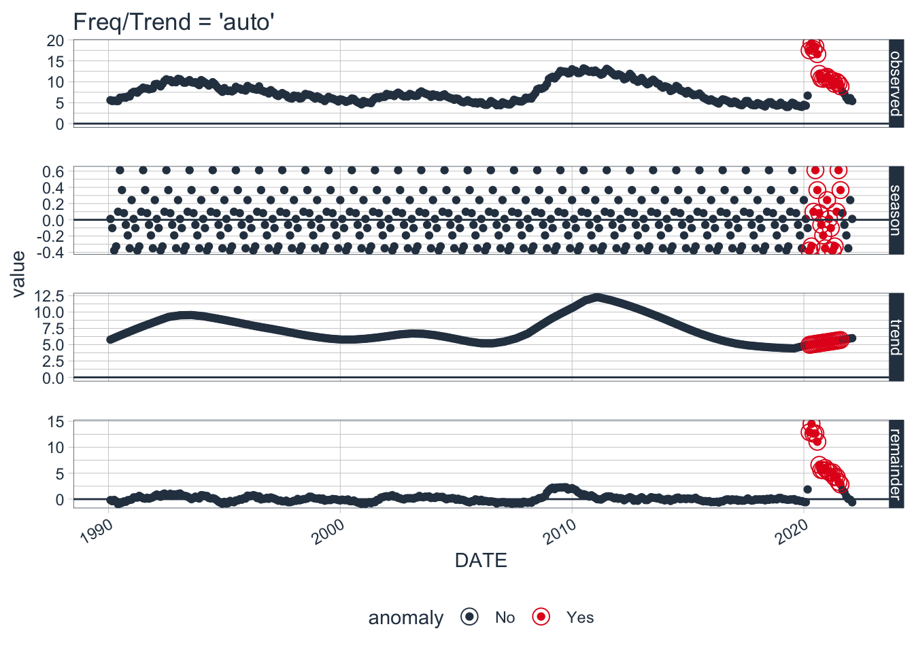
Then, we can adjust the default trend and seasonality to see what is the difference. Let’s check what is the default frequency trend for our seasonal decomposition method. This implies that if the scale is 1 day (meaning the difference between each data point is 1 day), then the frequency will be 7 days (or 1 week) and the trend will be around 90 days (or 3 months).
# A tibble: 8 × 3
time_scale frequency trend
<chr> <chr> <chr>
1 second 1 hour 12 hours
2 minute 1 day 14 days
3 hour 1 day 1 month
4 day 1 week 3 months
5 week 1 quarter 1 year
6 month 1 year 5 years
7 quarter 1 year 10 years
8 year 5 years 30 yearsWe can adjust local parameters to see what will happen. You will find the Covid-19 period is so odd upon the whole time period. You can try to exclude years after 2019 to see the difference.
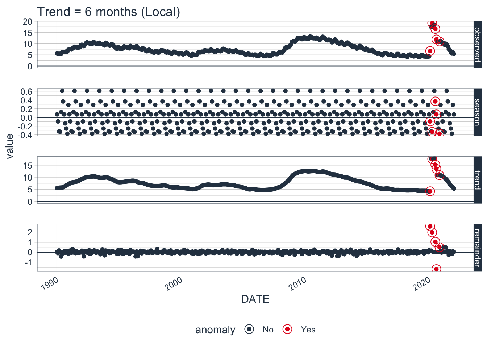
Can we detect other economic recession? The answer is Yes. The alpha and max_anoms are the two parameters that control the anomalize() function. If we decrease alpha, it increases the bands making it more difficult to be an outlier. The max_anoms parameter is used to control the maximum percentage of data that can be an anomaly. Please alter two parameters to see what will output.


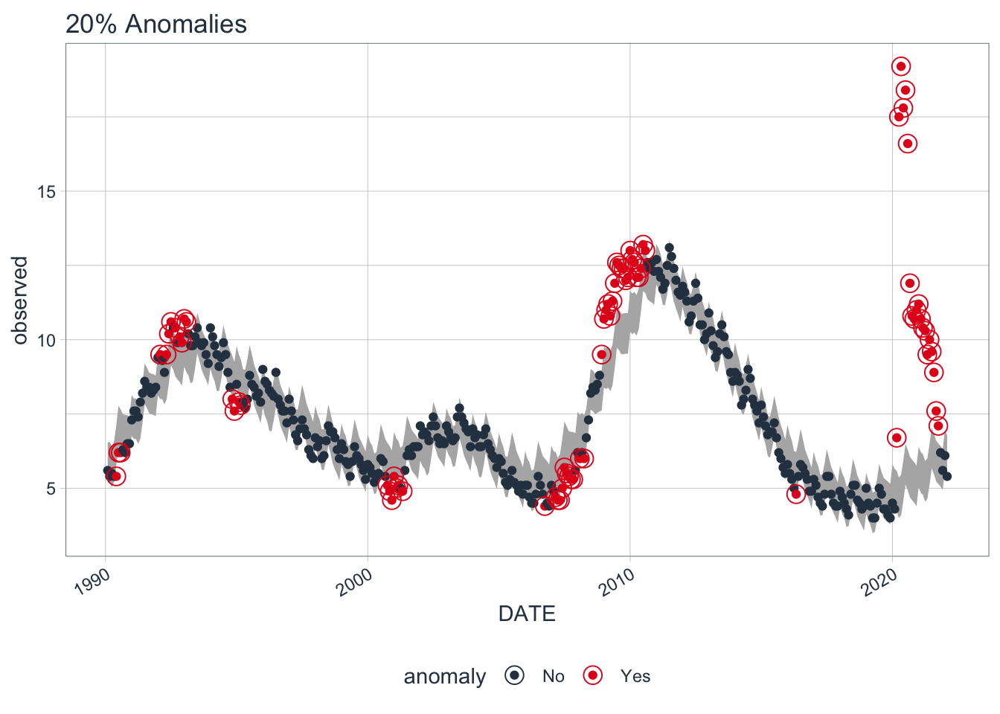
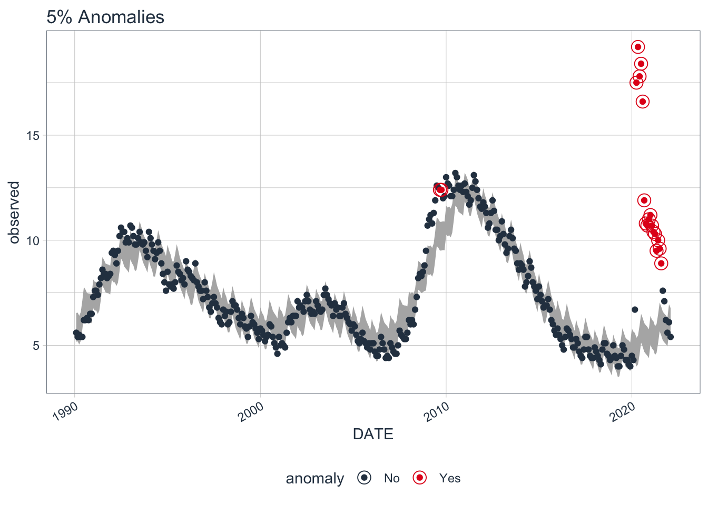
Finally, we can extract the anomalous data points.
# A time tibble: 17 × 10
# Index: DATE
DATE observed season trend remainder remaind…¹ remai…² anomaly recom…³
<date> <dbl> <dbl> <dbl> <dbl> <dbl> <dbl> <chr> <dbl>
1 2020-04-01 17.5 -0.378 4.98 12.9 -2.31 2.47 Yes 2.28
2 2020-05-01 19.2 -0.328 5.03 14.5 -2.31 2.47 Yes 2.38
3 2020-06-01 17.8 0.0992 5.08 12.6 -2.31 2.47 Yes 2.86
4 2020-07-01 18.4 0.612 5.12 12.7 -2.31 2.47 Yes 3.42
5 2020-08-01 16.6 0.366 5.17 11.1 -2.31 2.47 Yes 3.22
6 2020-09-01 11.9 0.0819 5.22 6.60 -2.31 2.47 Yes 2.98
7 2020-10-01 10.8 -0.0616 5.26 5.60 -2.31 2.47 Yes 2.88
8 2020-11-01 10.7 -0.192 5.31 5.59 -2.31 2.47 Yes 2.80
9 2020-12-01 11 -0.351 5.35 6.00 -2.31 2.47 Yes 2.68
10 2021-01-01 11.2 0.243 5.39 5.56 -2.31 2.47 Yes 3.32
11 2021-02-01 10.7 0.0108 5.44 5.25 -2.31 2.47 Yes 3.13
12 2021-03-01 10.4 -0.102 5.48 5.02 -2.31 2.47 Yes 3.07
13 2021-04-01 10.3 -0.378 5.53 5.15 -2.31 2.47 Yes 2.84
14 2021-05-01 9.5 -0.328 5.57 4.25 -2.31 2.47 Yes 2.93
15 2021-06-01 10 0.0992 5.62 4.28 -2.31 2.47 Yes 3.40
16 2021-07-01 9.6 0.612 5.66 3.32 -2.31 2.47 Yes 3.96
17 2021-08-01 8.9 0.366 5.71 2.82 -2.31 2.47 Yes 3.76
# … with 1 more variable: recomposed_l2 <dbl>, and abbreviated variable names
# ¹remainder_l1, ²remainder_l2, ³recomposed_l1Methods and Techniques used in “anomalize”
Anomaly detection is performed on remainders from a time series analysis that have had removed both:
Seasonal Components: cyclic pattern usually occurring on a daily cycle for minute or hour data. Here, the cyclic pattern can be interpreted as yearly cycles for monthly data
Trend Components: Longer term growth that happens over many observations
Therefore, the main goal of step 1 is to generate remainders from a time series. The seasonal decomposition outperforms ARIMA and other machine learning models
We can observe two techniques for seasonal decomposition in the “anomalize” package.
STL: Seasonal Decomposition of Time Series by Loess
The STL method uses the stl() function from the stats package. STL works very well in circumstances where a long term trend is present. The Loess algorithm typically does a very good job at detecting the trend. However, it circumstances when the seasonal component is more dominant than the trend, Twitter tends to perform better.
Twitter: Seasonal Decomposition of Time Series by Median
The Twitter method works identically to STL for removing the seasonal component. The main difference is in removing the trend, which is performed by removing the median of the data rather than fitting a smoother. The median works well when a long-term trend is less dominant that the short-term seasonal component. This is because the smoother tends to overfit the anomalies.
Comparison of STL and Twitter Decomposition Methods

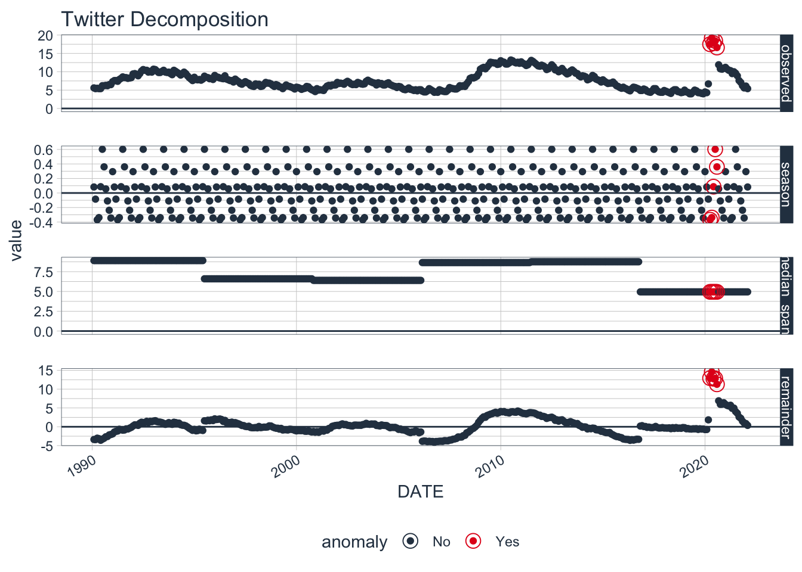
We can see that the season components for both STL and Twitter decomposition are exactly the same. The difference is the trend component.
Comparison of IQR and GESD Methods
Once a time series analysis is completed and the remainder has the desired characteristics, the remainders can be analyzed. The challenge is that anomalies are high leverage points that distort the distribution. The anomalize package implements two methods that are resistant to the high leverage points:
IQR: Inner Quartile Range It takes a distribution and uses the 25% and 75% inner quartile range to establish the distribution of the remainder. Limits are set by default to a factor of 3X above and below the inner quartile range, and any remainders beyond the limits are considered anomalies.
The IQR method does not depend on any loops and is therefore faster and more easily scaled than the GESD method. However, it may not be as accurate in detecting anomalies since the high leverage anomalies can skew the centerline (median) of the IQR.
GESD: Generalized Extreme Studentized Deviate Test
It involves an iterative evaluation of the Generalized Extreme Studentized Deviate test, which progressively evaluates anomalies, removing the worst offenders and recalculating the test statistic and critical value. The main benefit is that GESD is less resistant to high leverage points since the distribution of the data is progressively analyzed as anomalies are removed.
We can generate anomalous data to illustrate how each method work compares to each other.
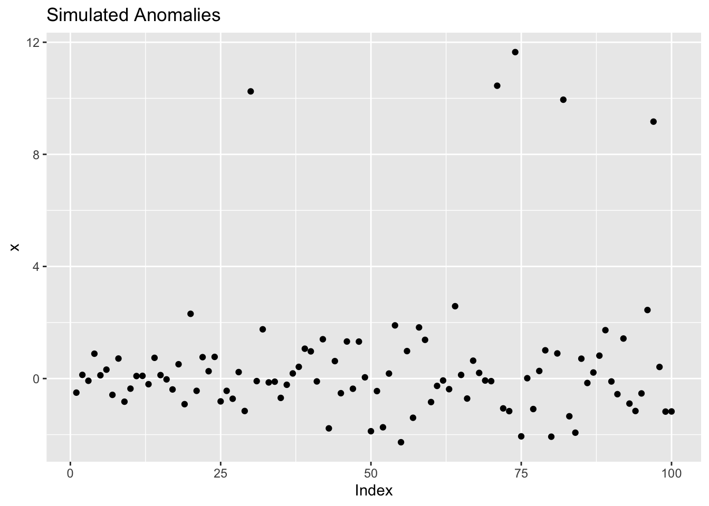
For IQR, The alpha parameter adjusts the 3X factor. By default, alpha = 0.05 for consistency with the GESD method. An alpha = 0.025, results in a 6X factor, expanding the limits and making it more difficult for data to be an anomaly.
For GESD, The alpha parameter adjusts the width of the critical values. By default, alpha = 0.05.


We can see that the IQR limits don’t vary whereas the GESD limits get more stringent as anomalies are removed from the data. As a result, the GESD method tends to be more accurate in detecting anomalies at the expense of incurring more processing time for the looped anomaly removal. This expense is most noticeable with larger data sets (many observations or many time series).
Change-point Detection
What is Change-point Detection
Time series data is a widely important data type that we have been learning more as of late. This data is described as sequences of measurements over time describing the behavior of systems. Often, we’ll see time series data in medicine, aerospace, finance, etc. The behaviors of the systems can change due to an aspect of time, therefore time series must be account for time in a way linear systems do not. Change point detection is a methodology to analyze data which detects abrupt changes in data when a property of the time series changes. A common example in stocks might be when do we see an abrupt change in the average prices of a certain stock over the period of a time, i.e., for one month cryptocurrency might sit at 70 dollars but then suddenly the next month it drops down to 4 and so we’d say the change-point was the period that seperates the two months.
Changes are spotted through three primary detectors:
mean
variance
mean-variance
Change-point will detect changes from one sequence to another sequence usually based on one of these 3 detectors to see if there’s a “change.”
Examples on Time Series LA Data
Let’s use data and examples to give some actual intuition about how change point works regarding time series data. I would like to note, similar to above, we will be performing this only on the univariate case, as moving to the multivariate cases increasing the difficulty by a bit. As once you consider a multivariate case, no longer can you only consider changes in time, but you must also account for covariate correlation between variables along with changes in time.
Plotting the data below you can already see some very obvious points where there are “changes” in unemployment.
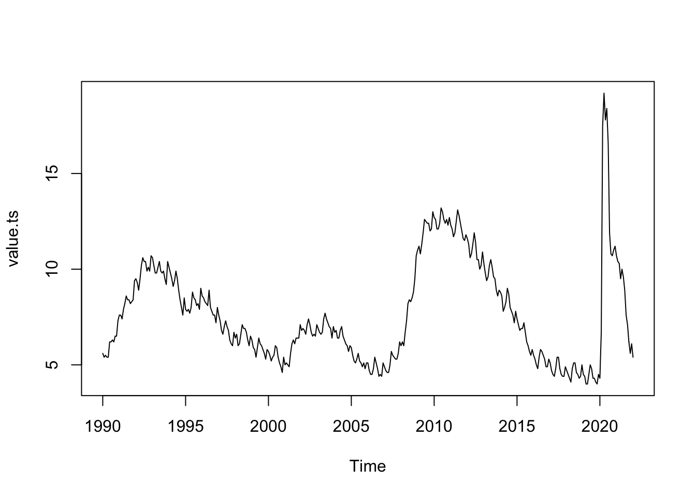
Some very obvious changes offcur at ~2008 and ~2020, so we should expect a change point to occur here.
Packages
Some notable packages used for change-point is: -Rbeast -changepoint
These two packages are what we’ll be using for the data.
Primarily, changepoint will be the more useful package since it allows more flexibility in how the parameters are set. But Rbeast is a nice package to use for seeing quick preliminaries on the data.
Using RBeast
[1;31m#####################################################################
# Seasonal Changepoints #
#####################################################################
[0m No seasonal/periodic component present (i.e., season='none')
[1;31m#####################################################################
# Trend Changepoints #
#####################################################################
[0m.-------------------------------------------------------------------.
| Ascii plot of probability distribution for number of chgpts (ncp) |
.-------------------------------------------------------------------.
|Pr(ncp = 0 )=0.000|* |
|Pr(ncp = 1 )=0.000|* |
|Pr(ncp = 2 )=0.000|* |
|Pr(ncp = 3 )=0.000|* |
|Pr(ncp = 4 )=0.000|* |
|Pr(ncp = 5 )=0.000|* |
|Pr(ncp = 6 )=0.000|* |
|Pr(ncp = 7 )=0.000|* |
|Pr(ncp = 8 )=0.000|* |
|Pr(ncp = 9 )=0.011|* |
|Pr(ncp = 10)=0.989|*********************************************** |
.-------------------------------------------------------------------.
| Summary for number of Trend ChangePoints (tcp) |
.-------------------------------------------------------------------.
|ncp_max = 10 | MaxTrendKnotNum: A parameter you set |
|ncp_mode = 10 | Pr(ncp=10)=0.99: There is a 98.9% probability |
| | that the trend component has 10 changepoint(s).|
|ncp_mean = 9.99 | Sum{ncp*Pr(ncp)} for ncp = 0,...,10 |
|ncp_pct10 = 10.00 | 10% percentile for number of changepoints |
|ncp_median = 10.00 | 50% percentile: Median number of changepoints |
|ncp_pct90 = 10.00 | 90% percentile for number of changepoints |
.-------------------------------------------------------------------.
| List of probable trend changepoints ranked by probability of |
| occurrence: Please combine the ncp reported above to determine |
| which changepoints below are practically meaningful |
'-------------------------------------------------------------------'
|tcp# |time (cp) |prob(cpPr) |
|------------------|---------------------------|--------------------|
|1 |363.000000 |1.00000 |
|2 |368.000000 |0.99717 |
|3 |138.000000 |0.99558 |
|4 |234.000000 |0.74542 |
|5 |29.000000 |0.63071 |
|6 |214.000000 |0.61671 |
|7 |380.000000 |0.49896 |
|8 |261.000000 |0.44442 |
|9 |179.000000 |0.40704 |
|10 |323.000000 |0.27342 |
.-------------------------------------------------------------------.
NOTE: the beast output object 'o' is a LIST. Type 'str(o)' to see all
the elements in it. Or use 'plot(o)' or 'plot(o,interactive=TRUE)' to
plot the model output.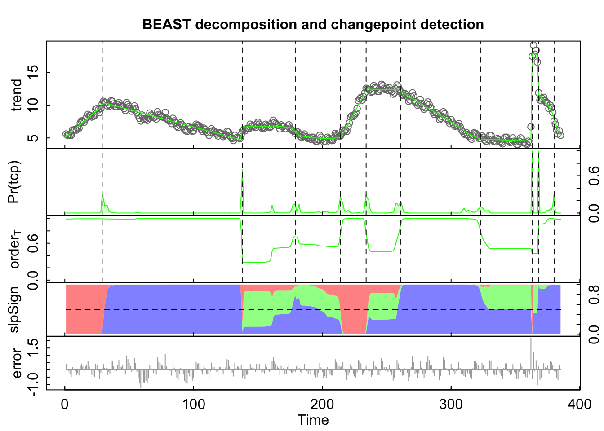
To read this graph, the dotted lines mean that there are indications of a change-point. In this graph, it detects around 10, and we can tell that there are change points where our initially intuition had expected it to be. What’s neat about the package is that it tells us the probability that it expects a changepoint there, so at the x-axis of time of 363 and 138, about 2020 and 2008 respectively, it detects around a 99% chance that there is a valid change point there account for mean and variance together.
Using changepoint
How do we know if a change-point found is significant or not? We calculate cost of the whole data with no change, if the difference is large enough then we say there is no change, otherwise if we see a appropriate difference in two intervals in mean, variance, or both, then we say there’s a change. In changepoint package, the default change-point metric to test if there is a change point or not is MBIC - a Modified Bayesian Information Criterion. There are various other’s but MBIC is a linear penalty to find if there is a singular, at most one changepoint, in terms of time series data this isn’t usually the case but let’s try it out.

Notice that we definitely need more than one point to express change points. But before we proceed, when using changepoint mean, we assume that the data values follow a normal distribution with all steps from points to points having the same standard deviation, usually 1. Therefore, let’s scale appropriately and see if our data may break assumptions.
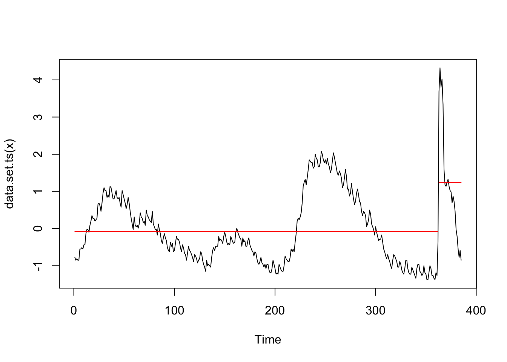
The change-point doesn’t change so therefore it’s fairly safe to assume that our data is fairly normalized and since we still get the same changepoint after scaling the variance, that shows that this is actually a changepoint.

There are two primary methods that we cover:
PELT (Pruned Exact Linear Time)
BinSeg (Binary Segmentation)
Typically, while asymptotically PELT is quicker in performance speed, Binary Segmentation has shown to be a bit faster in terms of application. Although, PELT typically leads to substantially more accurate segmentations than Binary Segmentation
Above we see the use of PELT only with respect to variance, and we can already see some inaccuracies with an inability to track all the notable changes. This might be a sign that we should also check for mean.
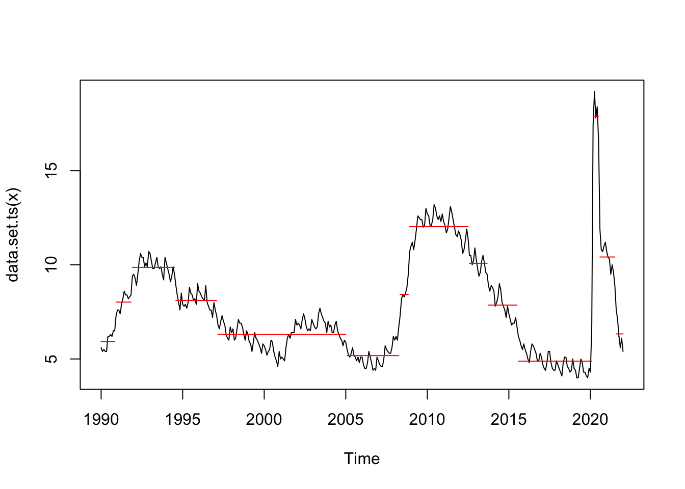
Already, we can already see improvement using mean and that it’s starting to match our results from the Rbeast preliminary runs. Using mean and PELT gives 13 change point positions, but to not draw any conclusions, lets try using mean and variance and perhaps a different penalty method to see if we can get something “better.”

From an initial view, we can already see that meanvar and PELT produces far too many change-points and that it doesn’t really produce anything of value. Therefore, let’s opt to use Binary Segmentation and mean, instead, which we might expect to get better points.
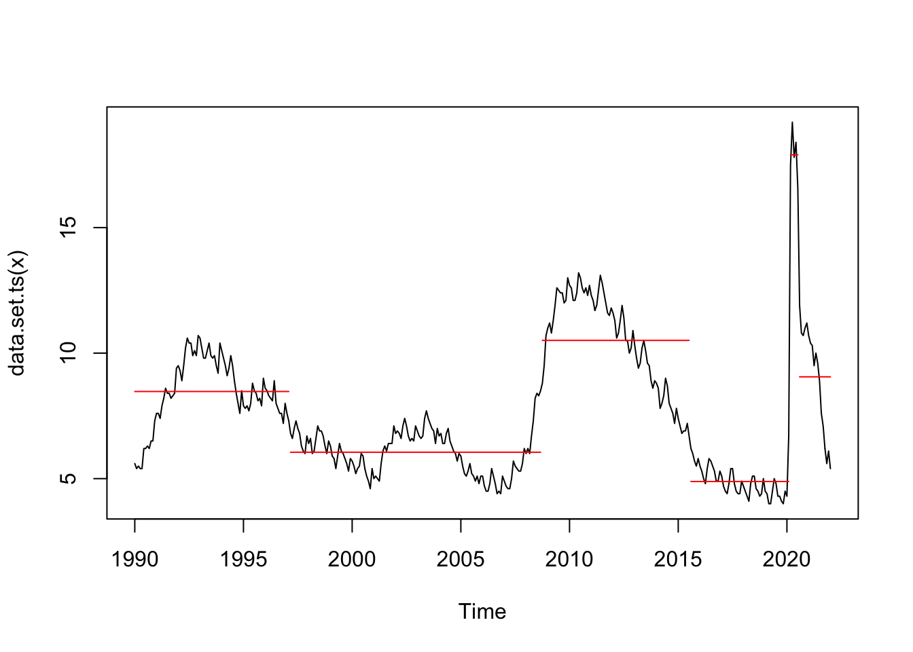
Although we see far less change-points, we can already see the most valuable point’s that would be telling of significant unemployment rates changes. Such as the recession in 2008 and COVID in 2020.
Although the testing is ambiguous and it’s difficult to see what really is “good” change point detection, this is how we went about our methods and intuition.